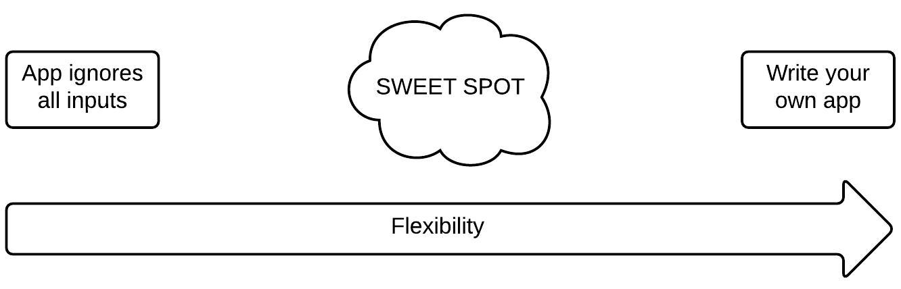
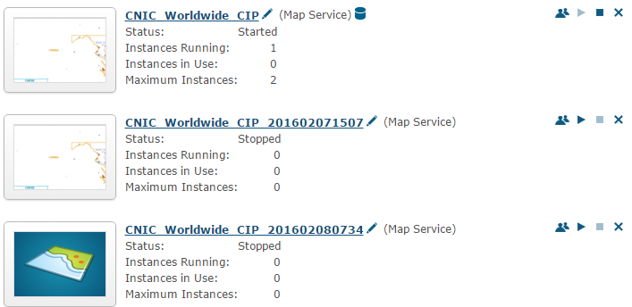

GISi Dev Meet #9
3/14/2016
Sensible Defaults vs Pathological Success
Flexibility

Make it easy for your users
Convention over configuration
Try to guess what the user is going to want
This means moving the decision making into the code--now it's
your
problem!
Evolution of a config file
Phase 2
Phase 3
How smart is too smart?

Don't be afraid to throw!
What else can we do to make things easier?
Make it easy to get (package management)
Make it easy to update (semantic versioning)
Make it easy to debug (useful error messages)
Discussion?
Repo